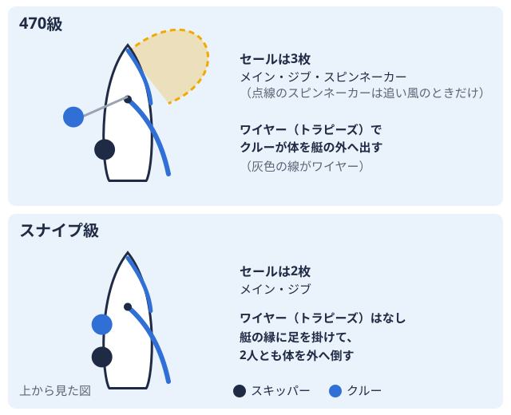

大会ガイド 2026-10-26
大学ヨットの大会情報はどこで分かる？ 要項・帆走指示書・結果の見方を解説
大学ヨット部の応援を始めると、「次の大会はいつ、どこで開催されるのか」「どんなルールで進むのか」が意外と分かりにくいと感じることがあります。大学ヨットの大会情報は、大会前・大会当日・大会後の3つの段階で、それぞれ異なる文書や場所に公開されるという特徴があります。この記事では、大会情報の基本となる「大会要項（レース公示大会の主催者が事前に出す、参加資格や日程などを知らせる文書。）」と「帆走指示書大会ごとに主催者が出す、コースやルールの取り決めを書いた文書。」の役割の違いを中心に、応援する側が大会情報を追いかけるときに押さえておきたいポイントを整理します。
大会情報は「要項」「帆走指示書」「成績」の3段階で公開される
ヨットの大会運営では、国際セーリング規則（RRS世界共通のヨットレースのルールブック。4年ごとに改訂される。）の考え方にもとづいて、大会前に主催団体が発行する文書と、大会当日に競技委員会が発行する文書とが役割分担されています。大学ヨットの大会も基本的にこの考え方に沿って運営されており、情報が公開されるタイミングは大きく3段階に分けられます。
- 大会前：主催する水域全国の大学ヨット部を地域ごとに分けた区分。北海道から九州まで全国に9つある。の学生ヨット連盟などが「大会要項（レース公示）」を発行し、大会の概要と出場資格を案内する
- 大会当日：競技委員会が「帆走指示書」を配布し、コースやスタート時刻など当日の運営ルールを示す
- 大会後：成績表（順位表）が公開され、各艇・各大学の順位や得点が確定する
応援する側としては、どの段階の情報を探しているのかを意識すると、目的の情報にたどり着きやすくなります。
大会前に確認する「大会要項（レース公示）」
大会要項は、英語では「Notice of Race（NOR）」と呼ばれ、日本語では「レース公示」とも表記されます。主催団体（水域の学生ヨット連盟や全日本学生ヨット連盟など）が大会に先立って発行するもので、主に次のような内容が記載されます。
| 記載される内容 | 具体例 |
|---|---|
| 大会の名称・開催期間 | 大会名、開催日、予備日の有無 |
| 開催会場 | ハーバー名、海面の名称 |
| 対象クラス | 470級全長4.7mの2人乗り競技用ヨット。大きな追い風用の帆とワイヤーを使う。  ・スナイプ級2人乗りの競技用ヨット。追い風用の大きな帆を持たず、ワイヤーも使わない。など |
| 適用規則 | 国際セーリング規則、日本セーリング連盟の附則、クラス規則 |
| 出場資格・参加料 | 加盟大学の条件、エントリー期限、保険加入の有無 |
| スケジュールの概要 | 受付日、開会式、予告信号の予定時刻 |
大学ヨットの場合、全日本学生ヨット選手権大会（団体戦）の出場資格は、水域予選全国大会に出る大学を決めるため、全国9つの地域ごとに行われる予選の大会。を勝ち抜いた大学の470級・スナイプ級チームに限られています。水域予選そのものの位置づけは大学ヨット水域予選ガイドで詳しく解説していますが、どの水域の予選に出場資格があるかは、各水域の学生ヨット連盟が発行する大会要項で確認するのが基本です。
受付時に配布される「帆走指示書」
大会要項とは別に、大会当日の受付時には「帆走指示書（Sailing Instructions／SI）」が配布されます。帆走指示書は大会要項とは発行主体が異なり、レース運営を担う競技委員会が作成します。記載される内容は、レースそのものに関わる具体的な事項が中心です。
- コース図（周回するマークの順番・回り方）
- 予告信号・スタート信号の時刻と方法
- レース成立に必要な最低艇数・時間制限
- 得点方式（ローポイントシステム着順がそのまま得点になり、合計点が少ない艇ほど上位になる採点方式。など）や除外レースの有無
- コース変更時の通知方法（旗や音による信号）
大会要項と帆走指示書は役割が重複しないように作られているのが基本ですが、海面の状況によって帆走指示書側で当日の詳細が追加されることもあります。初めて大会を観戦する人向けに、スタートの合図やローポイントシステムの考え方、DNFDid Not Finish。スタートしたが、ゴールできなかった艇に付く成績表の略称。・OCSスタートの合図の前にスタートラインを越え、やり直さなかった艇に付く略称。などの順位表の略称は大学ヨットの大会はどう見る？で整理しているので、帆走指示書に書かれているルールの意味を確認する際の参考になります。
大会中・大会後に確認する結果・成績
レースが終了すると、その日のうちに速報として順位がハーバーの掲示板などに貼り出されることが多く、最終的な成績は大会後に成績表（PDF）として公開されます。成績表には、艇ごとの順位・得点のほか、大学単位で合算した団体順位が記載されるのが一般的です。
応援している大学の最新の成績を確認したい場合は、ヨットマニアの成績PDFリンク一覧から、各大会で公開された成績PDFへのリンクをまとめて確認できます。また、大学ごとの大会成績をまとめたページも用意しているので、気になる大学の戦績を振り返る際に活用できます。
水域ごとの情報の探し方
大学ヨットの大会は、全国を北海道・東北・関東・中部・近畿北陸・関西・中国・四国・九州の9水域に分けて運営されており、大会要項や帆走指示書を発行する主体も水域ごとに異なります。そのため、応援したい大学がどの水域に所属しているかによって、確認すべき連盟のサイトも変わってきます。
ヨットマニアの水域一覧ページでは、9水域それぞれの学生ヨット連盟の情報をまとめています。たとえば関東水域のページには、関東学生ヨット連盟の加盟大学ディレクトリも掲載されており、早稲田大学のページのように、活動拠点となるハーバーや使用クラスを大学ごとに確認できます。全国大会である全日本学生ヨット選手権大会そのものの仕組みについては、全日本学生ヨット選手権大会とは？で解説しています。
初めて大会情報を追いかける人へ
大会要項・帆走指示書・成績表という3種類の文書の役割を知っておくと、「今はどの段階の情報を探しているのか」を整理しやすくなります。大会前なら水域の学生ヨット連盟のサイトで要項を、大会当日ならハーバーの掲示板や競技委員会からの案内で帆走指示書の内容を、大会後なら成績PDFで結果を確認する、という流れを押さえておくと、応援したい大学の動きを追いかけやすくなります。
ヨットマニアの大会カレンダーでは、各水域の大会日程をまとめているので、次にどの大会が予定されているかを確認する際の目安として活用してください。
まとめ
大学ヨットの大会情報は、大会前に主催団体が発行する「大会要項（レース公示）」、大会当日に競技委員会が配布する「帆走指示書」、大会後に公開される成績表という3段階で整理すると分かりやすくなります。それぞれ発行する主体や記載内容の役割が異なるため、探している情報がどの段階のものかを意識すると、必要な情報にたどり着きやすくなります。応援したい大学が決まったら、水域一覧や大学ディレクトリから所属水域を確認し、大会カレンダーや成績PDFリンク一覧もあわせて活用してみてください。
出典
PR
この部活・競技を応援したい方へ
体育会学生を支援するプラットフォーム「ツナカレ」で、応援できる部活を探せます。
PR
取材してほしい部活を募集中
あなたの部活・大会を取材してほしい方はこちらからご依頼ください。
オフシーズン・引退後に、長期インターンという選択
部活で培った力を実務で試す。16タイプ診断（30秒）で合う企業がわかります。